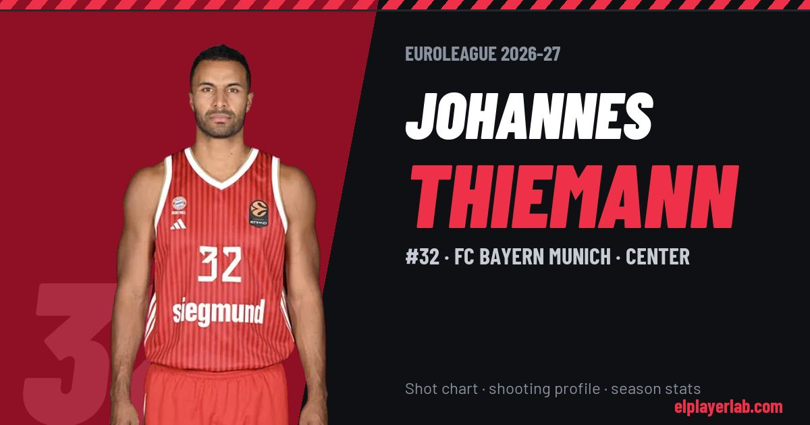

FC Bayern Munich · Euroleague 2026-27
Johannes Thiemann
#32 · Center · FC Bayern Munich · 2026-27 · 4 games · 10.8 pts · 6.0 reb · 1.5 ast a game

- Number
- 32
- Position
- Center
- Height
- 205 cm
- Weight
- 110 kg
- Born
- 1994-02-09
- Country
- Germany
Career
- Bayern Munich 2026-2027
- Gunma Crane Thunders 2024-2026
- Alba Berlin 2018-2024
- Riesen Ludwigsburg 2016-2018
- Baunach Young Pikes (loan) 2014-2016
- Brose Bamberg 2013-2016
Euroleague Player Lab: shot charts, shooting profiles and season stats for every player, rebuilt after every game.